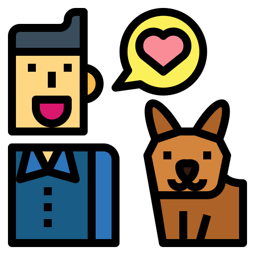
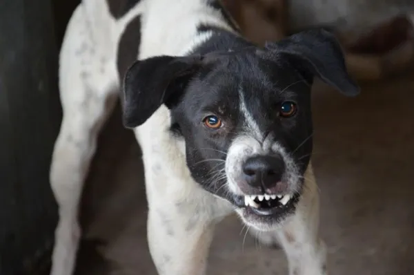
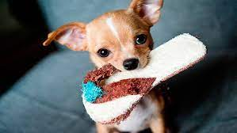
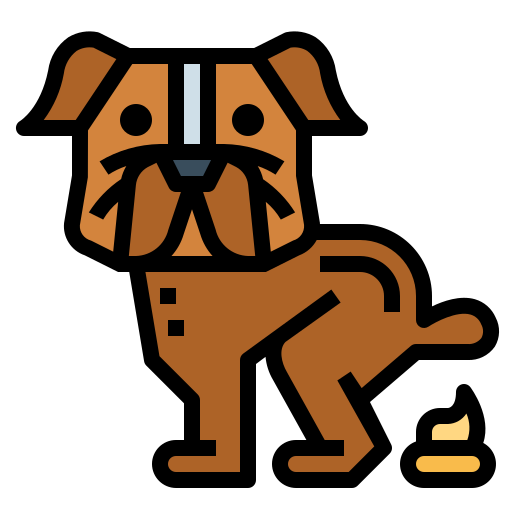
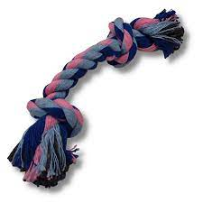
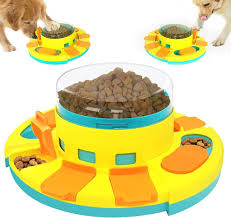

¡Bienvenido a nuestra sección de adiestramiento
de mascotas! En esta sección, encontrarás información valiosa sobre cómo adiestrar a tu mascota de
manera efectiva y segura.
En nuestra página web, creemos firmemente en la importancia del adiestramiento para el bienestar y la
felicidad de tu mascota, así como para la relación que tienes con ella.
Es por eso que hemos reunido una gran cantidad de recursos útiles y consejos prácticos para ayudarte a
adiestrar a tu mascota de la mejor manera posible.
Nuestro objetivo es proporcionarte la información y los recursos que necesitas para adiestrar a tu
mascota de manera efectiva y hacer de tu experiencia de adiestramiento una
experiencia positiva y enriquecedora tanto para ti como para tu mascota. ¡Gracias por visitar nuestra
sección de adiestramiento de mascotas y esperamos que encuentres la información
que necesitas para adiestrar a tu mascota con éxito!
 Los perros son considerados el mejor amigo del ser humano, sin embargo, algunos perros pueden mostrar un comportamiento agresivo hacia su dueño (que preferimos llamar "cuidador" o "tutor"). Este es un problema grave que no debe ser ignorado porque podría causar daños físicos y psicológicos, tanto en el animal como en la persona afectada. Por qué un perro es agresivo con su dueño es una pregunta que puede tener diferentes respuestas y es importante analizar. En general, ocurre por una falta de socialización y/o de estimulación física y mental, por enfermedad o dolor, por utilizar métodos de adiestramiento incorrectos, por protección de recursos o por miedos e inseguridad. Si un perro muestra un comportamiento agresivo hacia su humano es importante actuar rápido para resolver el problema. El primer paso siempre es consultar a un veterinario para descartar cualquier causa médica, especialmente cuando se observa una agresividad repentina.
Si tu perro se ha vuelto agresivo contigo es importante tomar medidas inmediatas para controlar el comportamiento del perro y devolverle la estabilidad emocional. Para ello, lo primero que debes hacer es identificar la causa del problema para trabajar directamente sobre ella. Socializarlo, mantenerlo estimulado, utilizar técnicas de adiestramiento adecuadas y aprender a interpretar su lenguaje corporal son algunas de las medidas a tener en cuenta. Conozcámoslas con más detalle:
¿Qué hacer si tu perro muerde todo? Como siempre, la
solución a un problema conductual pasa por conocer, en primer lugar, el motivo que ha llevado al animal
a comportarse de la forma en que lo hace. Esto no siempre resulta sencillo, pero es imprescindible para
poder abordar la situación de la manera más acertada posible.
Si tu peludo es todavía un cachorro, debes comprender que el juego y la exploración están a la orden del
día y debes permitir que utilice su boca, ¡especialmente si está cambiando los dientes! Ahora bien,
puedes ir, poco a poco, enseñándole a inhibir su mordida y a redirigirla exclusivamente hacia
aquellos juguetes que tú le proporciones. Este aprendizaje conlleva un tiempo, pero suele resultar
bastante sencillo de lograr siempre que se utilicen metodologías respetuosas con el animal.
Por su parte, si el problema reside en que el perro se aburre o se frustra cuando está solo en casa, es
posible que baste con proponer a animal actividades para realizar mientras está solo, por
ejemplo, dejarle con juguetes interactivos o proporcionarle mordedores y juguetes a los que pueda dar
uso. Por supuesto, también será necesario retirar de su alcance todo aquello que queremos evitar que
muerda e incluso, en ocasiones, se hace necesario restringir o bloquear su acceso a ciertas zonas.
Aquí hay algunas sugerencias para ayudar a entrenar a tu perro para que no orine dentro de la casa: 

En el mercado encontrarás muchos tipos de juguetes mordedores cuyo objetivo es que el perro se divierta mordiéndolo, pero sin la posibilidad de que lo llegue a romper y se coma alguna de sus partes, debido al fuerte material con el que están hechos.
Este tipo de pelotas son adecuadas para los perros grandes y fuertes, ya que son muy resistentes y mantienen a tu perro entretenido durante horas sin miedo a que la rompa. Además, estas pelotas normalmente tienen ranuras para que, al morder, los perros se limpien los dientes.
Sin duda, este es otro de los mejores juguetes para perros si vamos a participar en el juego, eso sí, no apto para todos y ahora veremos por qué. Consiste en una cuerda gruesa y resistente pensada para jugar al tira y afloja, aunque hay perros que se distraen solos con este juguete. Es un juguete muy recomendable siempre y cuando el perro no tienda a intentar destrozarlo. En caso de encontrar la diversión en deshilachar el juguete, podríamos correr el riesgo de que ingiera las cuerdas y se produzca una obstrucción intestinal. Por ello este juguete no es apto para perros destructores porque no hablamos de juguetes indestructibles, en estos casos es preferible optar por los anteriores de caucho.
La estimulación mental es tan importante como la física. Por ello, este tipo de juguetes tienen como objetivo que el perro piense o genere una estrategia para conseguir su premio, normalmente comida. Algunos de los mejores juguetes para perros de este grupo son: alfombra olfativa, juguetes interactivos, kong, etc


.png)